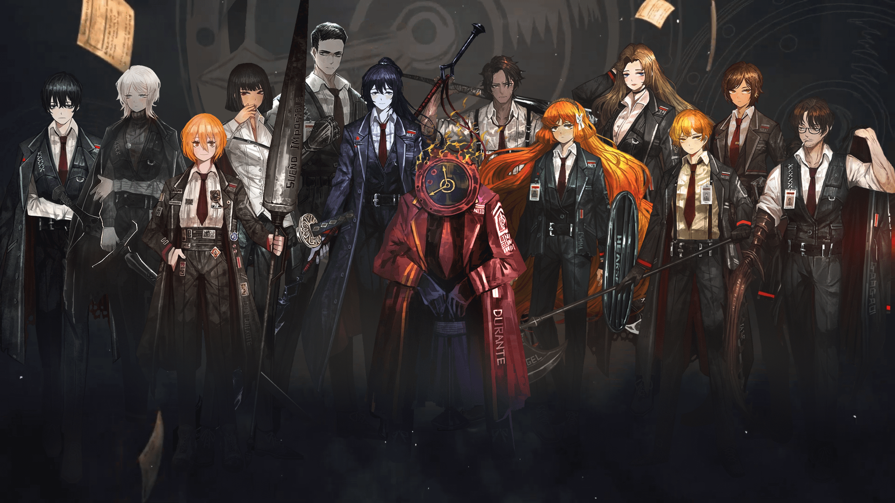
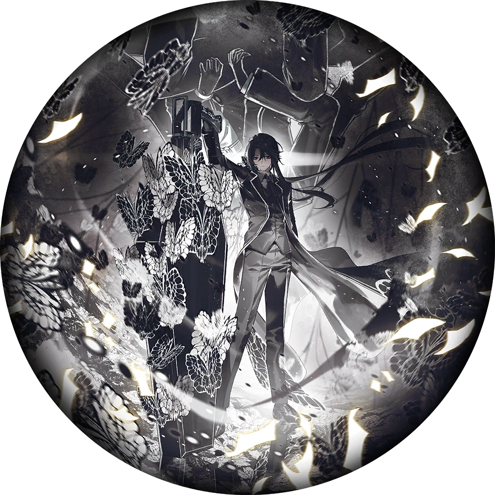

Los Pecadores
Aquí aprenderas un poco sobre los Pecadores y sus mecánicas.

Los Pecadores (Sinners)
Los Pecadores son los doce empleados de Limbus Company y el corazón de la historia. Lo primero que hay que entender es que no son un grupo elegido ni un equipo de héroes. Son personas con vidas rotas, secretos y deseos que pocas veces son nobles. La Ciudad es un lugar cruel, y cada uno llegó a la compañía arrastrando algo: una culpa, una pérdida, una obsesión o simplemente la necesidad de sobrevivir.
El nombre ya lo dice. Ser un “Pecador” aquí no es una etiqueta decorativa, sino la idea central del cast. Cada uno carga con algo que lo define, y la historia se interesa más por cómo lo enfrentan que por si lo superan.
Identidades (Id's)
Una Identidad es una versión concreta de un Pecador: una “ficha” que define cómo pelea en combate. Cada Pecador tiene muchas Identidades distintas, y puedes elegir cuál usar en tu escuadrón. Dos Identidades del mismo Pecador pueden jugar de forma totalmente diferente, con otro estilo, otras habilidades y otras fortalezas.
Las Identidades se dividen en tres niveles de rareza: 0, 00 y 000. Las de rareza 0 son las más básicas y todos los Pecadores arrancan con una. Las de 00 y 000 son más poderosas y se consiguen principalmente a través del sistema de extracción (el gacha del juego). La rareza no es una garantía de que sea mejor para todo, porque una Identidad bien construida puede rendir muy bien aunque sea de menor rareza.

E.G.O. Skills
Una E.G.O es una habilidad de ataque especial que el Pecador puede usar cuando la tiene equipada, y se equipa de forma completamente independiente de su Identidad. Es decir, la Identidad define tu kit base y la E.G.O es un “extra” que eliges aparte.
Son más fuertes que las habilidades normales, pero cuestan. Al usarlas se gasta el SP del Pecador y una cantidad de recursos de pecado acumulados. Esos recursos se generan al usar habilidades de cada afinidad, así que el equipo tiene que producir los pecados que la E.G.O pide. Si tu escuadrón genera Ira pero tu E.G.O pide Pereza, no podrás usarla cuando quieras.